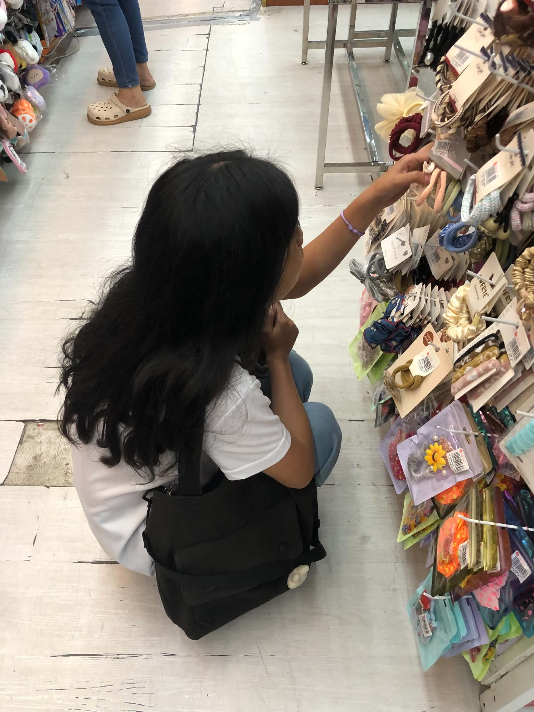
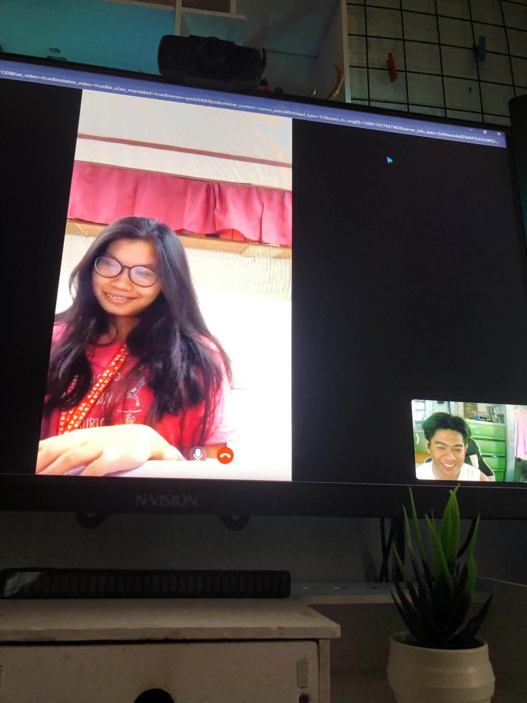
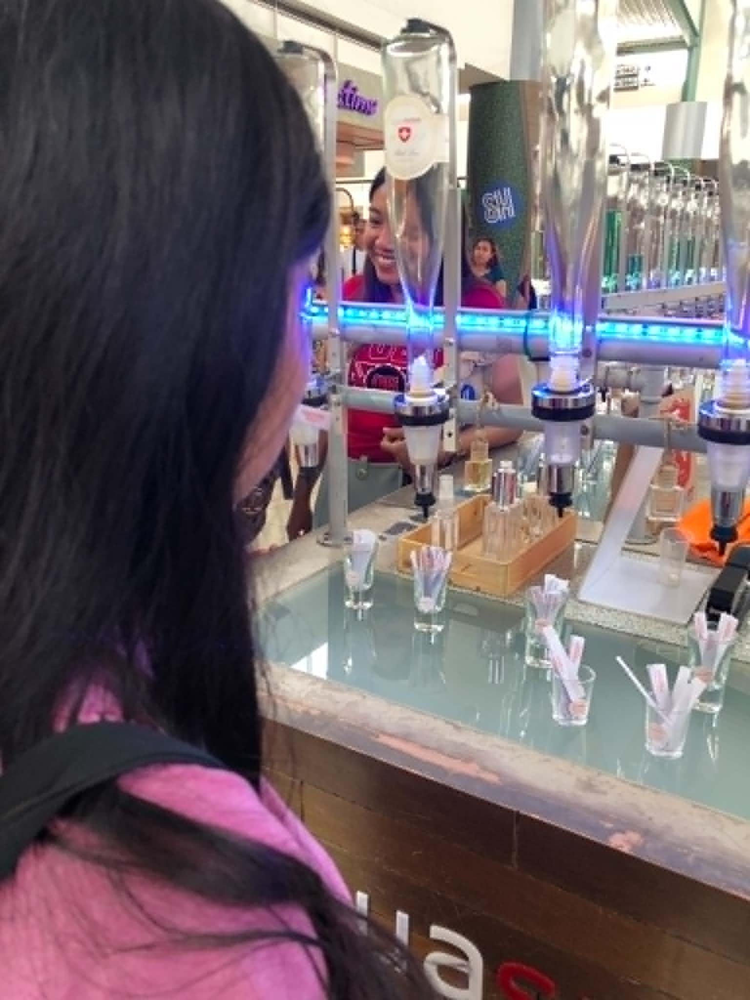
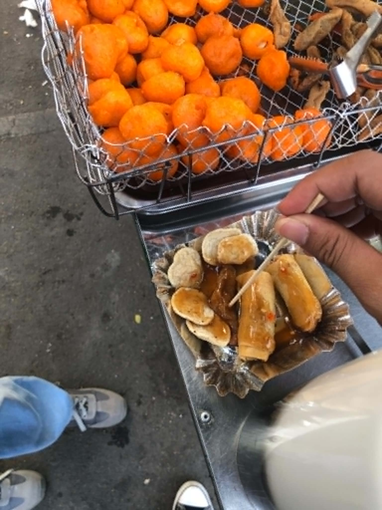
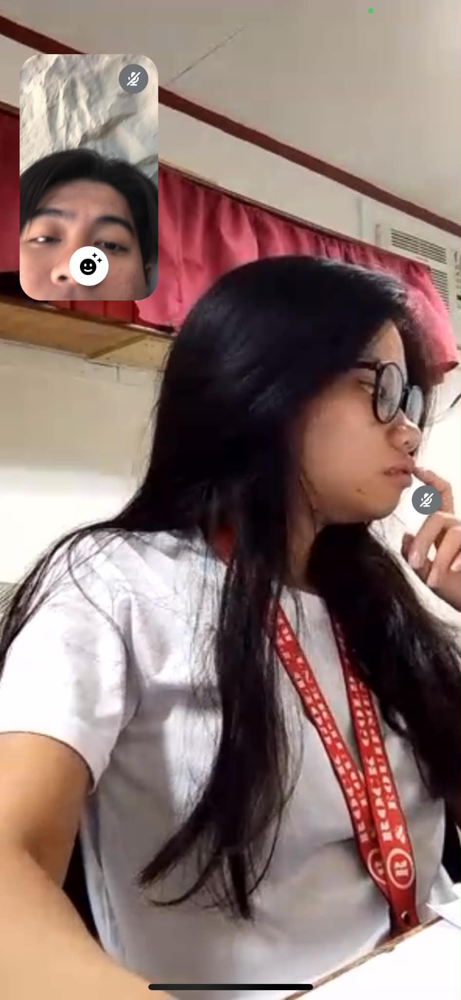

This is one of my favorite pictures of us because I was the one who took it, making it even more special to me. It was also the day we went out and had our very first Sunday date together. I was so happy because we finally got to spend the morning together, creating memories and enjoying each other’s company. Even though the weather was hot, we endured it without complaint because what mattered most was being together and having the chance to go out and share those precious moments. Looking back at this picture, it reminds me of how happy and grateful I was to be by your side, making simple moments feel so meaningful and unforgettable.

This picture was taken during our very first video call while you were at work. It holds a special place in my heart because that call became one of the greatest sources of reassurance in our relationship. On that day, I felt my heart becoming lighter and more at peace because being with you never felt like a burden or something that brought pressure it was simply us, laughing, teasing each other, and enjoying every moment together. This is the first relationship I have ever been in where, as time passes, I feel more secure instead of more anxious. You never let me overthink for days or weeks because you always take the time to understand me and give me the reassurance I need. That is why I promise to give all that love back to you and even more. I will cherish your love, stay loyal to you, and do my best to match the kindness, patience, and love that you continuously give to me.

This was our very first picture together the first time we leaned on each other and captured a moment that would become so special to me. We took it in the place where I used to go whenever I had problems, when my mind was heavy, and when I wasn’t feeling okay. Even though we only spent a short time there, we shared countless conversations because we both wanted to know each other more deeply. I am incredibly grateful to you because that place once held only my worries and lonely thoughts, but now it holds memories of us. I used to go there alone to find comfort, but now I have you by my side, and from that moment on, I knew I wanted to share every part of my life with you and have you with me through everything.

This picture was taken at the plaza while we were taking a break together. I remember accompanying you there as you worked on your papers and requirements because you were about to start your new job. Looking back, I feel so proud of you because despite all the doubts, worries, and overthinking you went through, you never gave up and eventually found the opportunity you had been hoping for. I witnessed your journey the struggles, the sleepless thoughts, and the uncertainty you faced about your career. At that moment, seeing you finally achieve something you worked so hard for filled my heart with happiness and pride. No matter what challenges come your way, I want you to know that I will never leave your side. I will always be here, supporting you, believing in you, and cheering for you every step of the way because your dreams and successes mean so much to me.

This picture was taken at the plaza while we were taking a break together. I remember accompanying you there as you worked on your papers and requirements because you were about to start your new job. Looking back, I feel so proud of you because despite all the doubts, worries, and overthinking you went through, you never gave up and eventually found the opportunity you had been hoping for. I witnessed your journey the struggles, the sleepless thoughts, and the uncertainty you faced about your career. At that moment, seeing you finally achieve something you worked so hard for filled my heart with happiness and pride. No matter what challenges come your way, I want you to know that I will never leave your side. I will always be here, supporting you, believing in you, and cheering for you every step of the way because your dreams and successes mean so much to me.